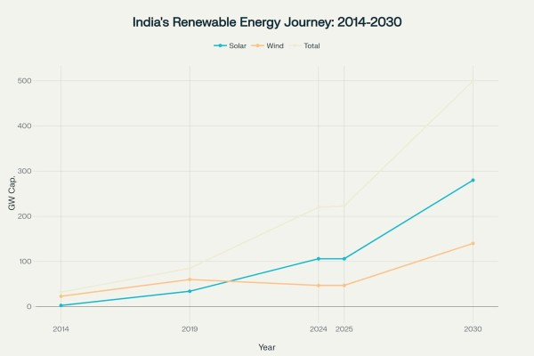
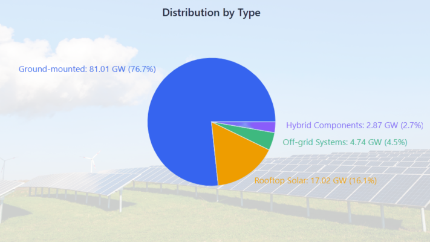
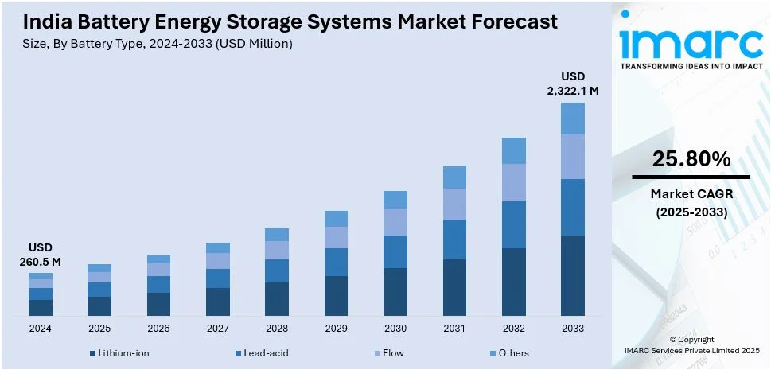
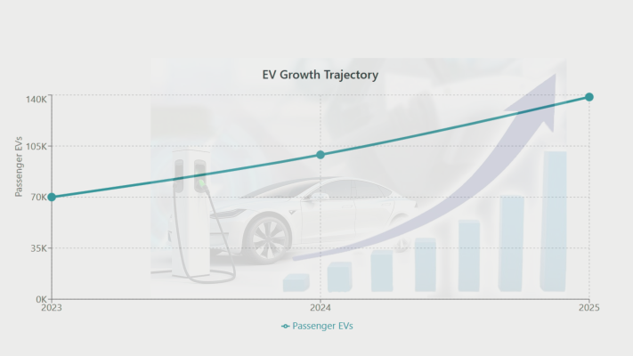
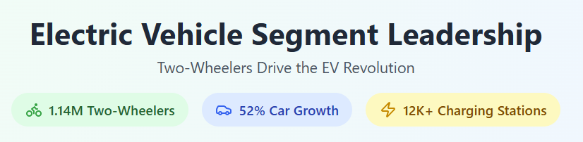
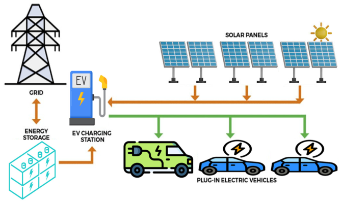
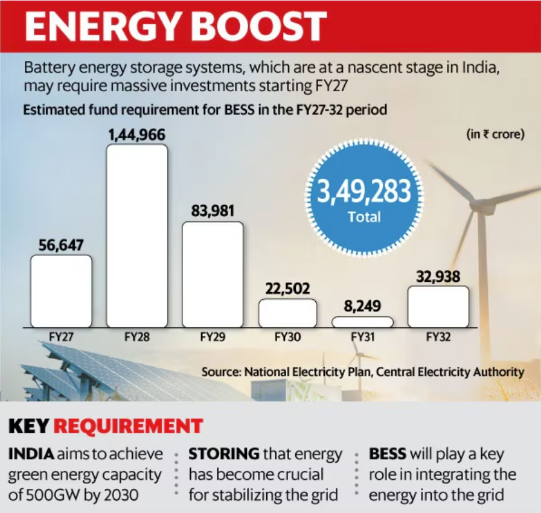
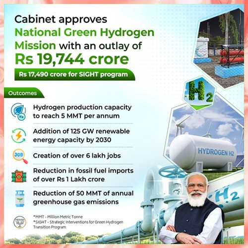
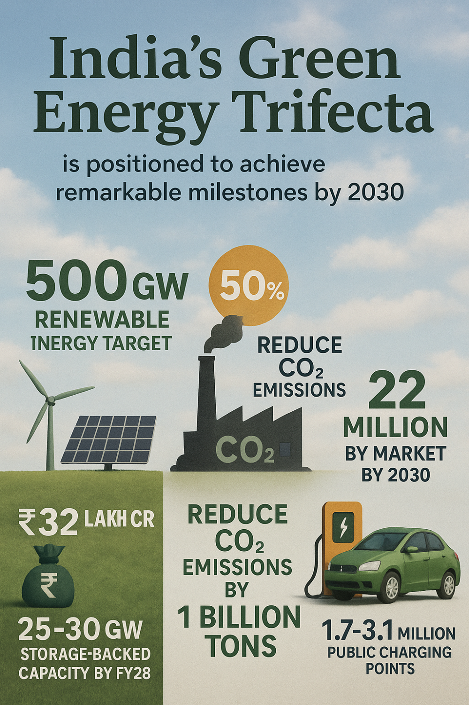

India stands at the cusp of an unprecedented energy transformation, with three interconnected technologies forming the backbone of its sustainable future: Battery Energy Storage Systems (BESS), Solar Power, and Electric Vehicles (EV). This powerful trifecta is not merely reshaping India's energy landscape but positioning the nation as a global leader in clean energy innovation.

India's renewable energy capacity has grown dramatically from 32 GW in 2014 to 223 GW in 2025, with ambitious targets to reach 500 GW by 2030.
The Solar Revolution Accelerates
India's solar energy sector has experienced remarkable growth, establishing itself as the cornerstone of the country's renewable energy strategy. The nation added 23.83 GW of solar capacity in FY 2024-25, representing a significant increase from 15.03 GW in the previous year. With total installed solar capacity now standing at 105.65 GW, India has exceeded its earlier projections and is well-positioned to achieve its ambitious target of 280 GW by 2030.
The solar expansion encompasses diverse segments, including 81.01 GW from ground-mounted installations, 17.02 GW from rooftop solar, 2.87 GW from solar components of hybrid projects, and 4.74 GW from off-grid systems. This diversified approach ensures solar energy penetrates both utility-scale and distributed categories, making clean energy accessible across urban and rural landscapes.

BESS: The Game-Changing Energy Storage Solution
Battery Energy Storage Systems have emerged as the critical enabler for India's renewable energy integration. The BESS market in India, valued at USD 260.5 million in 2024, is projected to reach USD 2,322.1 million by 2033, exhibiting an extraordinary growth rate of 25.80% CAGR. This explosive growth is driven by the urgent need to address renewable energy intermittency and enhance grid stability.

The Central Electricity Authority projects that India will require nearly 74 GW of storage capacity—amounting to over 411 GWh—by 2032 to integrate an anticipated 364 GW solar and 121 GW wind capacity. The economic landscape for BESS has undergone a dramatic transformation, with tariffs falling from ₹1.08 million per MW/month in 2022 to ₹221,000 per MW/month in recent tenders.
Standalone Energy Storage Systems have gained particular momentum, accounting for 64% of all utility-scale energy storage tenders in Q1 2025, with 6.1 GW of capacity tendered in just three months. The government's Viability Gap Funding (VGF) scheme, offering up to 30% support for capital expenditure, has been instrumental in accelerating this growth.
Electric Vehicle Revolution Gains Momentum
India's electric vehicle sector is experiencing unprecedented growth, with passenger EV sales expected to grow by 40% in 2025 to reach 1,38,606 units, up from 99,004 units in 2024. The broader EV ecosystem shows even more impressive numbers, with 1.96 million EVs registered in fiscal year 2024-25, representing a 17% jump over the previous year.

The electric two-wheeler segment leads this transformation with 1.14 million units sold in FY25, up 21.1% year-on-year. Electric cars are demonstrating even faster growth, with 52% year-on-year growth in May 2025. This momentum is supported by declining battery costs and expanding charging infrastructure, which has grown from just 1,800 stations in 2022 to over 12,146 in 2024.

The Synergistic Integration
The true power of this trifecta lies in their synergistic integration. Solar energy provides the clean generation capacity, BESS ensures grid stability and energy availability during non-solar hours, and EVs create mobile energy storage while driving demand for clean electricity. This integration enables:
Grid Stability and Reliability: BESS systems smooth out solar energy fluctuations, ensuring consistent power supply even when solar generation varies. Energy storage enables greater renewable penetration without compromising grid reliability, with intelligent control systems predicting generation and load patterns.
Vehicle-to-Grid (V2G) Integration: EVs are evolving beyond simple transportation to become distributed energy resources. V2G technology enables electric vehicles to send power back to the grid when not in use, turning EV batteries into decentralized energy storage devices. This creates a dynamic energy ecosystem where EVs can support grid stability during peak demand periods.
Economic Optimization: The combination allows for energy arbitrage, where excess solar energy is stored during peak generation and released during high-demand periods. This time-shifting capability reduces the need for expensive peaking power plants and optimizes energy costs.

Manufacturing and Supply Chain Localization
India is aggressively pursuing localization of battery manufacturing to reduce import dependency and capture value across the supply chain. The government's Production-Linked Incentive (PLI) scheme for Advanced Chemistry Cell (ACC) batteries, with a budget of ₹181 billion, aims to establish 50 GWh of domestic manufacturing capacity.
Major investments are flowing into the sector, with ₹5 lakh crore projected investments to increase India's BESS capacity to 66 GWh by 2032. This localization drive is crucial for energy security, as batteries account for nearly 80% of BESS implementation costs.

Policy Framework and Government Support
The Indian government has created a comprehensive policy ecosystem to support this green energy trifecta. Key initiatives include:
Energy Storage Obligations (ESO): A long-term trajectory mandating storage capacity increases from 1% in FY 2023-24 to 4% by FY 2029-30.

FAME Scheme: Promoting EV adoption through subsidies and infrastructure development.
Viability Gap Funding: Supporting BESS deployment with financial incentives.
National Green Hydrogen Mission: Targeting 5 MMT production by 2030 with ₹19,744 crore in investments.

Challenges and Opportunities
Despite remarkable progress, several challenges remain. The EV-to-public charger ratio stands at 135:1, significantly higher than global benchmarks. Technical challenges include the need for greater standardization, skilled manpower, and robust testing infrastructure. Battery cell supply chains remain concentrated in China, necessitating supply chain diversification.
However, these challenges present substantial opportunities. The urban-rural charging infrastructure divide offers growth potential for charging point operators. The development of second-life battery applications, repurposing retired EV batteries for stationary storage, can extend asset utilization and lower costs.
The Road to 2030 and Beyond
India's green energy trifecta is positioned to achieve remarkable milestones by 2030. The country is on track to achieve its 500 GW renewable energy target, with investment commitments of ₹32 lakh crore already secured. Storage-backed renewable energy capacity is expected to reach 25-30 GW by FY28, accounting for over 20% of total renewable additions.
By 2030, India aims to meet 50% of its energy requirements from renewable sources while reducing CO2 emissions by 1 billion tons. The EV market is projected to reach 22 million vehicles by 2030, with the charging infrastructure expanding to 1.7-3.1 million public charging points.

Conclusion: A Global Green Energy Leadership
The convergence of BESS, Solar, and EV technologies represents more than a technological transition—it embodies India's commitment to energy independence, climate action, and sustainable development. With renewable energy capacity growing 300% since 2014 and positioned as the 4th largest global solar market, India is demonstrating that emerging economies can lead the global clean energy transformation.
This trifecta creates a self-reinforcing ecosystem where each component strengthens the others, driving down costs, improving performance, and accelerating adoption. As India advances toward its net-zero target by 2070, the BESS + Solar + EV combination will serve as the foundation for a resilient, sustainable, and prosperous energy future that can serve as a model for the world.
The journey ahead requires continued innovation, investment, and policy support, but the trajectory is clear: India's green energy trifecta is not just reshaping the nation's energy landscape—it's defining the future of global sustainable development.